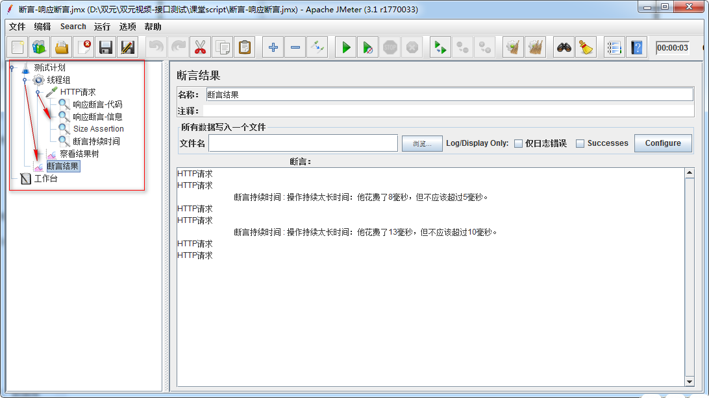

Jmeter 断言
目标
- 了解什么断言
- 了解常用断言分类
- 掌握响应断言组件使用
1. 为什么要学习断言？
接口测试原理：
请求：是否正确，默认请求成功是200（GET），如果请求错误也能返回404、500等。
检查：返回数据的正确性与完整性
1.1 需求1
查询学院-指定：http://127.0.0.1:8000/api/departments/T02/
让程序判断请求
1) 响应代码是否为200
2) 响应数据是否为T02资源
1.1 问题
1. 如何让程序代替人检查程序响应代码？
2. 如何让程序代替人检查程序响应数据是否为T02？
1.2 什么是断言？
概念：断言就是让程序代替人工去判断程序响应数据是否达到预期结果
2. 断言常用方式
1) 响应断言
2) Size Assertion（Size 断言）
3) Duration Assertion (持续时间断言)
2.1 响应断言
Jmeter中一种断言组件，可断言响应(信息头内容、主体内容、响应代码)
2.2 解决方案分析
1. 测试计划-线程组
2. 线程组-HTTP请求
3. HTTP请求->断言->响应断言
4. 测试计划->监听器->察看结果树
5. 测试计划->监听器->断言结果
2.3 技术难点分析
1.断言代码
2.断言数据(T02)
2.4 响应断言配置图-断言代码
1. 响应代码: 只有选择响应代码，Jmeter才去拿预期结果和响应代码去对比
2. 要测试的模式：这里填写我们的预期结果；如：200
2.5 响应断言配置图-断言数据
1. 响应文本：只有选择响应文本，Jmeter才去拿预期结果和响应数据去对比
2. 要测试的模式：这里填写我们的预期结果；如：T02
2.6 断言结果
作用：断言运行成功默认不显示，如果断言失败，记录每次失败原因
2.7. 响应断言-总结：
1. 断言概念
2. 断言响应代码
3. 断言响应数据
4. 断言结果作用
2.8 需求2
使用断言需求1所返回的主体数据大小是否小于100kb
2.9 问题
1. 响应断言如何判断返回的数据大小小于100kb?
3. Size Assertion（Size 断言）
作用：主要判断返回数据的大小是否属于预期数据大小范围
（Response Header、Response Body、响应信息）
3.1 解决方案分析
1. 线程组->断言->Size Assertion（Size 断言）
3.2 技术难点分析
1. 断言响应主题数据大小
3.3 Size Assertion（Size 断言）配置图
1. Response Body:选择此项判断返回主题数据Body的大小
2. 字节大小：设置要判断数值 单位bytes/kb
3. <:小于符号，说明判断要返回Body主题数据大小小于100kb
3.4 Size Assertion（Size 断言）-总结：
1. 作用
2. 可断言哪些大小
需求3
1.断言需求1所返回的响应时间是否小于10毫秒
问题
1.基于响应断言、Size Assertion怎么去断言请求的响应时间是否小于10毫秒？
4. 断言持续时间
作用：断言服务器响应请求的时间是否小于指定值；
4.1 解决方案分析
1. 线程组->断言->断言持续时间
4.2 技术难点分析
1.时间设置
4.3 断言持续时间配置图
1. 持续时间(毫秒)：这里的持续时间为毫秒，比如：10 毫秒。
2. 断言响应时间是否超过设置的值(10)，如果超过则断言失败，反之成功。
4.4 断言持续时间-总结
1. 作用
2. 单位
3. 断言成功标准
断言-总结：
作用：
1. 响应断言：断言响应代码/响应数据
2. Size Assertion：断言响应数据大小是否在指定范围
3. 断言持续时间：断言响应数据时间是否在指定时间范围
4.5 脚本-效果图

问题
1. 树形标签栏里的层级结构是有什么意义？
6. 什么是作用域？
作用域就是，制定了指定功能的有效作用范围；

6.1 Jmeter中的作用域
在jmeter中，元件的作用域是靠测试计划的树形结构中元件的父子关系来确定；
6.2 Jmeter中作用域说明
1. 取样器(sampler)元件内组件不依赖其他元件就可执行,因此取样器不存在作用问题;
2. 逻辑控制器（Logic Controller）元件作用域只对它的子节点有作用;
3. 其他作用域默认根据测试计划中树形结构来定；
6.3 问题
1. 元件中的组件都有作用域，那么在相同作用域范围内不同元件之间执行顺序是什么？
6.4 各元件执行顺序
1.各元件之间的执行顺
1) 配置元件(config elements)
2) 前置处理程序(Per-processors)
3) 定时器(timers)
4) 取样器(Sampler)
5) 后置处理程序(Post-processors)
6) 断言(Assertions)
7) 监听器(Listeners)
6.5 提示
1. 逻辑控制器是个容器，在容器内可添加任意元件内组件，所以它的执行顺序
应该是配置元件、前置处理器程序之后，根据逻辑控制器的位置顺序来执行
2. 如果在同一作用域范围内有多个同一类型的元件，则这些元件按照它们在测试计划中的【上下顺序】依次执行
作用域-总结：
1. 什么是作用域
2. 相同作用域不同元件执行顺序
3. 同一类型元件内各组件执行顺序